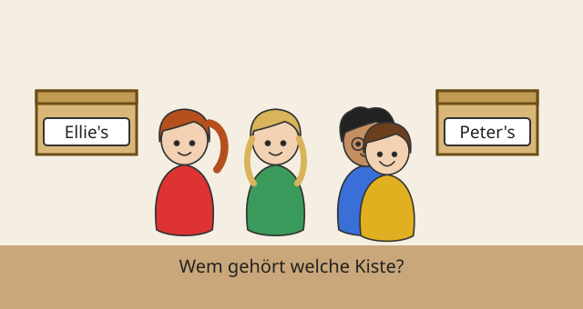
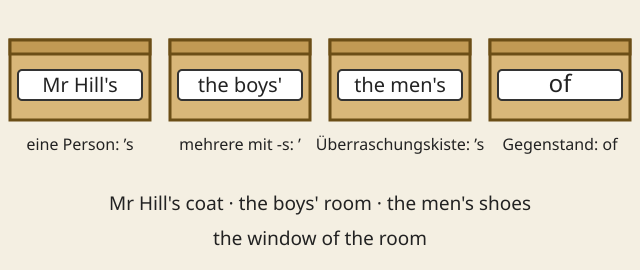

Wem gehört die Kiste? ’s und of
Mit einem KI-Tutor lernen
Ein KI-Tutor erklärt dir diese Seite und hilft dir bei den Aufgaben. Wähl deinen Assistenten:
Mit Claude öffnen Mit ChatGPT öffnen Mit Mistral Vibe öffnen
Du nutzt dein eigenes Konto beim Anbieter. Der Assistent ist kein Angebot von lernapps.net: lernapps liefert nur Inhalte und Aufgaben. Die Wahl gilt für alle Seiten, nur auf diesem Gerät.
Namensschilder für die Kisten

Von links: Ellie (roter Pferdeschwanz), Sophie (Zöpfe), Amir (Brille) und Peter (gelbe Jacke). Auf den Kisten kleben Namensschilder.
Quelle: eigene Zeichnung. Lizenz: CC-BY-4.0.Im Lagerraum stehen jetzt viele Kisten. Mr Hill sagt: „Jede Kiste bekommt ein Namensschild. Dann wissen alle, wem sie gehört.“
Das kannst du danach: Du sagst mit ’s, mit s’ und mit of, wem etwas gehört.
| Wort | Bedeutung |
|---|---|
| bike | Fahrrad |
| cap | Mütze |
| coat | Mantel |
| shoe | Schuh |
| door | Tür |
| window | Fenster |
| room | Zimmer |
| boy | Junge |
| girl | Mädchen |
| name | Name |
| where | wo |
| storeroom | Lagerraum |
Aufgabe
Lösung
Ellie richtige Antwort
Hinter dem Namen steht ’s. Es sagt, dass die Kiste zu Ellie gehört.
allen Kindern
Ein Schild mit nur einem Namen meint nur diese eine Person.
Mr Hill
Mr Hill steht nicht auf dem Schild. Auf dem Schild steht nur Ellie.
Name plus ’s sagt, wem etwas gehört. Ellie’s box ist Ellies Kiste.
’s, s’ und of auf dem Namensschild
Auf dem Namensschild steht, wem die Kiste gehört. Bei einer Person hängst du ’s an den Namen. Bei mehreren Personen mit -s steht nur ein ’ hinter dem s. Bei einer Überraschungskiste (men, children) steht wieder ’s. Bei Gegenständen sagst du meistens of.

Vier Namensschilder. Zuerst steht, wem es gehört, dann der Gegenstand.
Quelle: eigene Zeichnung. Lizenz: CC-BY-4.0.| Wem gehört es? | Beispiel |
|---|---|
| eine Person | Mr Hill’s coat |
| mehrere mit -s | the boys’ room |
| Überraschungskiste | the men’s shoes |
| ein Gegenstand | the window of the room |
Merke
Im Deutschen sagst du oft „die Mütze von Peter“. Im Englischen kommt zuerst, wem es gehört: Mrs Parker’s cap. Den Apostroph vergisst du nicht: Mrs Parkers cap ist falsch. Bei Gegenständen ist of üblich: the window of the room.
Übung
Aufgabe
Wähle das richtige Namensschild.
Tipp
Frage dich, ob es zu einer Person, zu mehreren mit -s oder zu einer Überraschungskiste gehört.
- Es ist Peters Mütze. → It is … cap.
- Es ist Ellies Mantel. → It is … coat.
- Es ist das Zimmer der Mädchen. → It is the … room.
- Es sind die Schuhe der Kinder. → They are the … shoes.
Lösung
- It is Peter's cap.
- It is Ellie's coat.
- It is the girls' room.
- They are the children's shoes.
Aufgabe
Lösung
Richtige Antwort: Amir – Amir's bike; die zwei Jungen – the boys' room; die Kinder – the children's room; der Lagerraum – the door of the storeroom
Bei einer Person steht ’s, bei mehreren mit -s nur ’, bei children wieder ’s und bei einem Gegenstand meistens of.
Aufgabe
Schreibe das Namensschild.
Tipp
Zuerst steht, wem es gehört. Dann kommt der Gegenstand. Gehört er zu einem Raum oder einer Tür, steht of dazwischen.
- Amir · bike
- the girls · coats
- the children · shoes
- the storeroom · door
Lösung
- Amir's bike
- the girls' coats
- the children's shoes
- the door of the storeroom (auch richtig: the storeroom's door)
Aufgabe
Lösung
Richtige Antwort: Die Aussage stimmt nicht.
Der Apostroph steht hinter dem s von girls. Darum sind es mehrere Mädchen. Für ein einziges Mädchen würde girl’s room stehen.
Aufgabe
Hör zu und schreibe den ganzen Satz auf.
Tipp
Hör genau hin, wem etwas gehört. Der Apostroph hört sich nicht an, du musst ihn schreiben.
- KI
- KI
- KI
Lösung
- Ellie's bag is in the storeroom.
- The door of the room is red.
- The children's shoes are in the bag.
Selbst sagen und beschriften
Aufgabe
Hör zu, sprich nach und nimm dich auf. Vergleiche dann mit dem Original.
Tipp
Hör den Satz zuerst. Sprich dann langsam nach. Der Apostroph wird nicht gesprochen.
- Peter's cap is in the box.KI
- The girls' coats are in the boxes.KI
- Where is the window of the storeroom?KI
Zum Aufnehmen braucht diese Aufgabe JavaScript. Die Beispiele kannst du auch ohne anhören.
Lösung
- Peter's cap is in the box.
- The girls' coats are in the boxes.
- Where is the window of the storeroom?
Offene Aufgabe
Schreibe zwei Namensschilder für Kisten im Lagerraum, eines mit ’s und eines mit of (zum Beispiel: Mr Hill's coat und the door of the room).
Eine gute Antwort enthält:
Lösung
Sophie's bag. The window of the storeroom.
Wie es weitergeht
Jede Kiste hat jetzt ein Namensschild. Mr Hill steht in der Tür und fragt von Weitem, welche Kiste gemeint ist. Auf der nächsten Seite zeigst du mit this und that auf Nahes und Fernes.